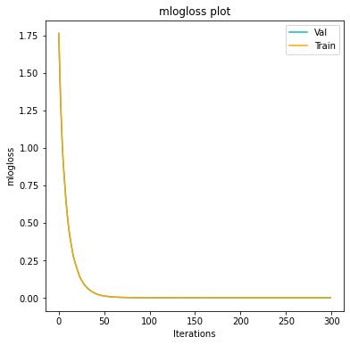
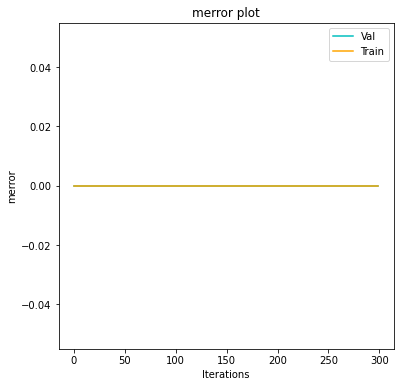
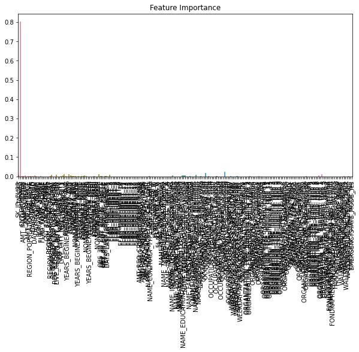

Model building For balanced dataset¶
Prepared dataset¶
[1]:
import pandas as pd
import numpy as np
import sklearn
import plotly.express as px
import plotly.graph_objects as go
from sklearn.model_selection import train_test_split
from sklearn.preprocessing import QuantileTransformer
from sklearn.ensemble import RandomForestClassifier
import matplotlib.pyplot as plt
from sklearn.metrics import accuracy_score, f1_score
from sklearn.model_selection import GridSearchCV
from sklearn.metrics import classification_report
import pickle
[2]:
df_balanced=pd.read_csv('df_balanced.csv')
df_test=pd.read_csv('df_clean_test.csv')
[3]:
#df_test.drop('Unnamed: 0', axis=1, inplace=True)
[3]:
df_balanced
[3]:
| SK_ID_CURR | TARGET | CNT_CHILDREN | AMT_INCOME_TOTAL | AMT_CREDIT | AMT_ANNUITY | AMT_GOODS_PRICE | REGION_POPULATION_RELATIVE | DAYS_BIRTH | DAYS_EMPLOYED | ... | HOUSETYPE_MODE_terraced house | WALLSMATERIAL_MODE_Block | WALLSMATERIAL_MODE_Mixed | WALLSMATERIAL_MODE_Monolithic | WALLSMATERIAL_MODE_Others | WALLSMATERIAL_MODE_Panel | WALLSMATERIAL_MODE_Stone, brick | WALLSMATERIAL_MODE_Wooden | EMERGENCYSTATE_MODE_No | EMERGENCYSTATE_MODE_Yes | |
|---|---|---|---|---|---|---|---|---|---|---|---|---|---|---|---|---|---|---|---|---|---|
| 0 | -0.701669 | 0 | -5.199338 | -1.362078 | 0.594274 | 0.363967 | 0.788455 | 0.676854 | -0.727750 | 0.415763 | ... | 0 | 1 | 0 | 0 | 0 | 0 | 0 | 0 | 1 | 0 |
| 1 | -0.988809 | 0 | -5.199338 | -0.444534 | 0.293986 | 0.372246 | -0.072829 | 0.935852 | -1.924632 | 0.805961 | ... | 0 | 0 | 0 | 0 | 0 | 1 | 0 | 0 | 1 | 0 |
| 2 | -0.602116 | 0 | 0.716839 | -0.116941 | 0.197009 | -0.850234 | -0.305796 | -1.269664 | 0.663931 | -0.954191 | ... | 0 | 0 | 0 | 0 | 0 | 0 | 1 | 0 | 1 | 0 |
| 3 | 1.794403 | 0 | -5.199338 | -0.444534 | -0.256198 | -1.048748 | -0.072829 | 0.676854 | -0.305052 | 0.969427 | ... | 0 | 0 | 0 | 0 | 0 | 0 | 1 | 0 | 1 | 0 |
| 4 | -0.694229 | 0 | -5.199338 | -2.096521 | -0.256198 | -0.877196 | -0.072829 | 0.676854 | -0.042009 | -0.705986 | ... | 0 | 0 | 0 | 0 | 0 | 0 | 1 | 0 | 1 | 0 |
| ... | ... | ... | ... | ... | ... | ... | ... | ... | ... | ... | ... | ... | ... | ... | ... | ... | ... | ... | ... | ... | ... |
| 7523 | 3.399052 | 1 | 0.716839 | -0.444534 | -0.186000 | 0.539569 | -0.322932 | 0.148584 | 0.486918 | -0.195700 | ... | 0 | 0 | 0 | 0 | 0 | 0 | 1 | 0 | 1 | 0 |
| 7524 | 3.466660 | 1 | 0.716839 | 0.945616 | 0.447879 | 1.316586 | 0.395204 | -0.108103 | 0.774478 | -0.055540 | ... | 0 | 0 | 0 | 0 | 0 | 1 | 0 | 0 | 1 | 0 |
| 7525 | 3.568461 | 1 | -5.199338 | 0.041413 | 1.738731 | 1.053106 | 1.371657 | 1.116369 | 0.817900 | -0.689529 | ... | 0 | 0 | 0 | 0 | 0 | 0 | 1 | 0 | 1 | 0 |
| 7526 | 3.604753 | 1 | 0.716839 | 0.496390 | -0.256198 | 0.498519 | -0.072829 | 0.047692 | 1.393650 | -0.673967 | ... | 0 | 0 | 0 | 0 | 0 | 0 | 1 | 0 | 1 | 0 |
| 7527 | 3.907467 | 1 | -5.199338 | 0.667419 | -0.010037 | -0.261573 | -0.072829 | -0.478025 | -0.467493 | 1.325750 | ... | 0 | 0 | 0 | 0 | 0 | 0 | 1 | 0 | 0 | 1 |
7528 rows × 214 columns
[4]:
column_nan=df_balanced.columns.tolist()
[5]:
column_nan
[5]:
['SK_ID_CURR',
'TARGET',
'CNT_CHILDREN',
'AMT_INCOME_TOTAL',
'AMT_CREDIT',
'AMT_ANNUITY',
'AMT_GOODS_PRICE',
'REGION_POPULATION_RELATIVE',
'DAYS_BIRTH',
'DAYS_EMPLOYED',
'DAYS_REGISTRATION',
'DAYS_ID_PUBLISH',
'FLAG_MOBIL',
'FLAG_EMP_PHONE',
'FLAG_WORK_PHONE',
'FLAG_CONT_MOBILE',
'FLAG_PHONE',
'FLAG_EMAIL',
'CNT_FAM_MEMBERS',
'REGION_RATING_CLIENT',
'REGION_RATING_CLIENT_W_CITY',
'HOUR_APPR_PROCESS_START',
'REG_REGION_NOT_LIVE_REGION',
'REG_REGION_NOT_WORK_REGION',
'LIVE_REGION_NOT_WORK_REGION',
'REG_CITY_NOT_LIVE_CITY',
'REG_CITY_NOT_WORK_CITY',
'LIVE_CITY_NOT_WORK_CITY',
'EXT_SOURCE_2',
'EXT_SOURCE_3',
'APARTMENTS_AVG',
'YEARS_BEGINEXPLUATATION_AVG',
'ELEVATORS_AVG',
'ENTRANCES_AVG',
'FLOORSMAX_AVG',
'LIVINGAREA_AVG',
'NONLIVINGAREA_AVG',
'APARTMENTS_MODE',
'YEARS_BEGINEXPLUATATION_MODE',
'ELEVATORS_MODE',
'ENTRANCES_MODE',
'FLOORSMAX_MODE',
'LIVINGAREA_MODE',
'NONLIVINGAREA_MODE',
'APARTMENTS_MEDI',
'YEARS_BEGINEXPLUATATION_MEDI',
'ELEVATORS_MEDI',
'ENTRANCES_MEDI',
'FLOORSMAX_MEDI',
'LIVINGAREA_MEDI',
'NONLIVINGAREA_MEDI',
'TOTALAREA_MODE',
'OBS_30_CNT_SOCIAL_CIRCLE',
'DEF_30_CNT_SOCIAL_CIRCLE',
'OBS_60_CNT_SOCIAL_CIRCLE',
'DEF_60_CNT_SOCIAL_CIRCLE',
'DAYS_LAST_PHONE_CHANGE',
'FLAG_DOCUMENT_2',
'FLAG_DOCUMENT_3',
'FLAG_DOCUMENT_4',
'FLAG_DOCUMENT_5',
'FLAG_DOCUMENT_6',
'FLAG_DOCUMENT_7',
'FLAG_DOCUMENT_8',
'FLAG_DOCUMENT_9',
'FLAG_DOCUMENT_10',
'FLAG_DOCUMENT_11',
'FLAG_DOCUMENT_12',
'FLAG_DOCUMENT_13',
'FLAG_DOCUMENT_14',
'FLAG_DOCUMENT_15',
'FLAG_DOCUMENT_16',
'FLAG_DOCUMENT_17',
'FLAG_DOCUMENT_18',
'FLAG_DOCUMENT_19',
'FLAG_DOCUMENT_20',
'FLAG_DOCUMENT_21',
'AMT_REQ_CREDIT_BUREAU_HOUR',
'AMT_REQ_CREDIT_BUREAU_DAY',
'AMT_REQ_CREDIT_BUREAU_WEEK',
'AMT_REQ_CREDIT_BUREAU_MON',
'AMT_REQ_CREDIT_BUREAU_QRT',
'AMT_REQ_CREDIT_BUREAU_YEAR',
'NAME_CONTRACT_TYPE_Cash loans',
'NAME_CONTRACT_TYPE_Revolving loans',
'CODE_GENDER_F',
'CODE_GENDER_M',
'FLAG_OWN_CAR_N',
'FLAG_OWN_CAR_Y',
'FLAG_OWN_REALTY_N',
'FLAG_OWN_REALTY_Y',
'NAME_TYPE_SUITE_Children',
'NAME_TYPE_SUITE_Family',
'NAME_TYPE_SUITE_Group of people',
'NAME_TYPE_SUITE_Other_A',
'NAME_TYPE_SUITE_Other_B',
'NAME_TYPE_SUITE_Spouse, partner',
'NAME_TYPE_SUITE_Unaccompanied',
'NAME_INCOME_TYPE_Businessman',
'NAME_INCOME_TYPE_Commercial associate',
'NAME_INCOME_TYPE_State servant',
'NAME_INCOME_TYPE_Working',
'NAME_EDUCATION_TYPE_Academic degree',
'NAME_EDUCATION_TYPE_Higher education',
'NAME_EDUCATION_TYPE_Incomplete higher',
'NAME_EDUCATION_TYPE_Lower secondary',
'NAME_EDUCATION_TYPE_Secondary / secondary special',
'NAME_FAMILY_STATUS_Civil marriage',
'NAME_FAMILY_STATUS_Married',
'NAME_FAMILY_STATUS_Separated',
'NAME_FAMILY_STATUS_Single / not married',
'NAME_FAMILY_STATUS_Widow',
'NAME_HOUSING_TYPE_Co-op apartment',
'NAME_HOUSING_TYPE_House / apartment',
'NAME_HOUSING_TYPE_Municipal apartment',
'NAME_HOUSING_TYPE_Office apartment',
'NAME_HOUSING_TYPE_Rented apartment',
'NAME_HOUSING_TYPE_With parents',
'OCCUPATION_TYPE_Accountants',
'OCCUPATION_TYPE_Cleaning staff',
'OCCUPATION_TYPE_Cooking staff',
'OCCUPATION_TYPE_Core staff',
'OCCUPATION_TYPE_Drivers',
'OCCUPATION_TYPE_HR staff',
'OCCUPATION_TYPE_High skill tech staff',
'OCCUPATION_TYPE_IT staff',
'OCCUPATION_TYPE_Laborers',
'OCCUPATION_TYPE_Low-skill Laborers',
'OCCUPATION_TYPE_Managers',
'OCCUPATION_TYPE_Medicine staff',
'OCCUPATION_TYPE_Private service staff',
'OCCUPATION_TYPE_Realty agents',
'OCCUPATION_TYPE_Sales staff',
'OCCUPATION_TYPE_Secretaries',
'OCCUPATION_TYPE_Security staff',
'OCCUPATION_TYPE_Waiters/barmen staff',
'WEEKDAY_APPR_PROCESS_START_FRIDAY',
'WEEKDAY_APPR_PROCESS_START_MONDAY',
'WEEKDAY_APPR_PROCESS_START_SATURDAY',
'WEEKDAY_APPR_PROCESS_START_SUNDAY',
'WEEKDAY_APPR_PROCESS_START_THURSDAY',
'WEEKDAY_APPR_PROCESS_START_TUESDAY',
'WEEKDAY_APPR_PROCESS_START_WEDNESDAY',
'ORGANIZATION_TYPE_Advertising',
'ORGANIZATION_TYPE_Agriculture',
'ORGANIZATION_TYPE_Bank',
'ORGANIZATION_TYPE_Business Entity Type 1',
'ORGANIZATION_TYPE_Business Entity Type 2',
'ORGANIZATION_TYPE_Business Entity Type 3',
'ORGANIZATION_TYPE_Cleaning',
'ORGANIZATION_TYPE_Construction',
'ORGANIZATION_TYPE_Culture',
'ORGANIZATION_TYPE_Electricity',
'ORGANIZATION_TYPE_Emergency',
'ORGANIZATION_TYPE_Government',
'ORGANIZATION_TYPE_Hotel',
'ORGANIZATION_TYPE_Housing',
'ORGANIZATION_TYPE_Industry: type 1',
'ORGANIZATION_TYPE_Industry: type 10',
'ORGANIZATION_TYPE_Industry: type 11',
'ORGANIZATION_TYPE_Industry: type 12',
'ORGANIZATION_TYPE_Industry: type 2',
'ORGANIZATION_TYPE_Industry: type 3',
'ORGANIZATION_TYPE_Industry: type 4',
'ORGANIZATION_TYPE_Industry: type 5',
'ORGANIZATION_TYPE_Industry: type 6',
'ORGANIZATION_TYPE_Industry: type 7',
'ORGANIZATION_TYPE_Industry: type 9',
'ORGANIZATION_TYPE_Insurance',
'ORGANIZATION_TYPE_Kindergarten',
'ORGANIZATION_TYPE_Legal Services',
'ORGANIZATION_TYPE_Medicine',
'ORGANIZATION_TYPE_Military',
'ORGANIZATION_TYPE_Mobile',
'ORGANIZATION_TYPE_Other',
'ORGANIZATION_TYPE_Police',
'ORGANIZATION_TYPE_Postal',
'ORGANIZATION_TYPE_Realtor',
'ORGANIZATION_TYPE_Religion',
'ORGANIZATION_TYPE_Restaurant',
'ORGANIZATION_TYPE_School',
'ORGANIZATION_TYPE_Security',
'ORGANIZATION_TYPE_Security Ministries',
'ORGANIZATION_TYPE_Self-employed',
'ORGANIZATION_TYPE_Services',
'ORGANIZATION_TYPE_Telecom',
'ORGANIZATION_TYPE_Trade: type 1',
'ORGANIZATION_TYPE_Trade: type 2',
'ORGANIZATION_TYPE_Trade: type 3',
'ORGANIZATION_TYPE_Trade: type 4',
'ORGANIZATION_TYPE_Trade: type 5',
'ORGANIZATION_TYPE_Trade: type 6',
'ORGANIZATION_TYPE_Trade: type 7',
'ORGANIZATION_TYPE_Transport: type 1',
'ORGANIZATION_TYPE_Transport: type 2',
'ORGANIZATION_TYPE_Transport: type 3',
'ORGANIZATION_TYPE_Transport: type 4',
'ORGANIZATION_TYPE_University',
'FONDKAPREMONT_MODE_not specified',
'FONDKAPREMONT_MODE_org spec account',
'FONDKAPREMONT_MODE_reg oper account',
'FONDKAPREMONT_MODE_reg oper spec account',
'HOUSETYPE_MODE_block of flats',
'HOUSETYPE_MODE_specific housing',
'HOUSETYPE_MODE_terraced house',
'WALLSMATERIAL_MODE_Block',
'WALLSMATERIAL_MODE_Mixed',
'WALLSMATERIAL_MODE_Monolithic',
'WALLSMATERIAL_MODE_Others',
'WALLSMATERIAL_MODE_Panel',
'WALLSMATERIAL_MODE_Stone, brick',
'WALLSMATERIAL_MODE_Wooden',
'EMERGENCYSTATE_MODE_No',
'EMERGENCYSTATE_MODE_Yes']
[6]:
column_test=df_test.columns.tolist()
[9]:
def stratified_split(df, target, val_percent=0.2):
'''
Function to split a dataframe into train and validation sets, while preserving the ratio of the labels in the target variable
Inputs:
- df, the dataframe
- target, the target variable
- val_percent, the percentage of validation samples, default 0.2
Outputs:
- train_idxs, the indices of the training dataset
- val_idxs, the indices of the validation dataset
'''
classes=list(df[target].unique())
train_idxs, val_idxs = [], []
for c in classes:
idx=list(df[df[target]==c].index)
np.random.shuffle(idx)
val_size=int(len(idx)*val_percent)
val_idxs+=idx[:val_size]
train_idxs+=idx[val_size:]
return train_idxs, val_idxs
train_idxs, val_idxs = stratified_split(df_balanced, 'TARGET', val_percent=0.25)
val_idxs, test_idxs = stratified_split(df_balanced[df_balanced.index.isin(val_idxs)], 'TARGET', val_percent=0.5)
[10]:
train_df = df_balanced[df_balanced.index.isin(train_idxs)]
X_train = train_df[column_nan].values
Y_train = train_df[['TARGET']].values
print('Retrieved Training Data')
print(X_train.shape,'----',Y_train.shape)
val_df = df_balanced[df_balanced.index.isin(val_idxs)]
X_val = val_df[column_nan].values
Y_val = val_df[['TARGET']].values
print('Retrieved Validation Data')
print(X_val.shape,'----',Y_val.shape)
test_df = df_balanced[df_balanced.index.isin(test_idxs)]
X_test = test_df[column_nan].values
Y_test = test_df[['TARGET']].values
print('Retrieved Test Data')
print(X_test.shape,'----',Y_test.shape)
Retrieved Training Data
(5646, 214) ---- (5646, 1)
Retrieved Validation Data
(942, 214) ---- (942, 1)
Retrieved Test Data
(940, 214) ---- (940, 1)
[11]:
#store data, all in numpy arrays
training_data = {'X_train':X_train,'Y_train':Y_train,
'X_val': X_val,'Y_val':Y_val,
'X_test': X_test,'Y_test':Y_test}
Random Forest¶
Create the model and fit with random value[12]:
clf_balanced = RandomForestClassifier(n_jobs=None,random_state=27, verbose=1)
clf_balanced.fit(training_data['X_train'], training_data['Y_train'].reshape(training_data['Y_train'].shape[0],))
[Parallel(n_jobs=1)]: Using backend SequentialBackend with 1 concurrent workers.
[Parallel(n_jobs=1)]: Done 100 out of 100 | elapsed: 1.1s finished
[12]:
RandomForestClassifier(random_state=27, verbose=1)
[13]:
predicted_labels = clf_balanced.predict(training_data['X_test'])
[Parallel(n_jobs=1)]: Using backend SequentialBackend with 1 concurrent workers.
[Parallel(n_jobs=1)]: Done 100 out of 100 | elapsed: 0.0s finished
[14]:
accuracy_score(training_data['Y_test'], predicted_labels)
[14]:
1.0
[45]:
params = {
'n_estimators' : range(100,500,50),
'max_depth' : [8, 9, 10, 11, 12],
'max_features': ['auto'],
'criterion' :['gini']
}
#metrics to consider: f1_micro, f1_macro, roc_auc_ovr
gsearch1 = GridSearchCV(estimator = clf_balanced, param_grid = params, scoring='f1_micro',n_jobs=-1,verbose = 10, cv=5)
gsearch1.fit(training_data['X_train'], training_data['Y_train'].reshape(training_data['Y_train'].shape[0],))
Fitting 5 folds for each of 40 candidates, totalling 200 fits
[Parallel(n_jobs=-1)]: Using backend LokyBackend with 4 concurrent workers.
[Parallel(n_jobs=-1)]: Done 5 tasks | elapsed: 7.2s
[Parallel(n_jobs=-1)]: Done 10 tasks | elapsed: 10.3s
[Parallel(n_jobs=-1)]: Done 17 tasks | elapsed: 16.7s
[Parallel(n_jobs=-1)]: Done 24 tasks | elapsed: 23.9s
[Parallel(n_jobs=-1)]: Done 33 tasks | elapsed: 38.3s
[Parallel(n_jobs=-1)]: Done 42 tasks | elapsed: 49.2s
[Parallel(n_jobs=-1)]: Done 53 tasks | elapsed: 57.8s
[Parallel(n_jobs=-1)]: Done 64 tasks | elapsed: 1.2min
[Parallel(n_jobs=-1)]: Done 77 tasks | elapsed: 1.5min
[Parallel(n_jobs=-1)]: Done 90 tasks | elapsed: 1.8min
[Parallel(n_jobs=-1)]: Done 105 tasks | elapsed: 2.2min
[Parallel(n_jobs=-1)]: Done 120 tasks | elapsed: 2.7min
[Parallel(n_jobs=-1)]: Done 137 tasks | elapsed: 2.9min
[Parallel(n_jobs=-1)]: Done 154 tasks | elapsed: 3.4min
[Parallel(n_jobs=-1)]: Done 173 tasks | elapsed: 4.0min
[Parallel(n_jobs=-1)]: Done 192 tasks | elapsed: 4.6min
[Parallel(n_jobs=-1)]: Done 200 out of 200 | elapsed: 4.8min finished
[Parallel(n_jobs=1)]: Using backend SequentialBackend with 1 concurrent workers.
[Parallel(n_jobs=1)]: Done 150 out of 150 | elapsed: 2.8s finished
[45]:
GridSearchCV(cv=5, estimator=RandomForestClassifier(random_state=27, verbose=1),
n_jobs=-1,
param_grid={'criterion': ['gini'], 'max_depth': [8, 9, 10, 11, 12],
'max_features': ['auto'],
'n_estimators': range(100, 500, 50)},
scoring='f1_micro', verbose=10)
[1]:
def getTrainScores(gs):
results = {}
runs = 0
for x,y in zip(list(gs.cv_results_['mean_test_score']), gs.cv_results_['params']):
results[runs] = 'mean:' + str(x) + 'params' + str(y)
runs += 1
best = {'best_mean': gs.best_score_, "best_param":gs.best_params_}
return results, best
[46]:
getTrainScores(gsearch1)
---------------------------------------------------------------------------
NameError Traceback (most recent call last)
<ipython-input-46-e8c117a33285> in <module>
----> 1 getTrainScores(gsearch1)
NameError: name 'getTrainScores' is not defined
[18]:
clf2 = gsearch1.best_estimator_
params1 = {
'n_estimators' : range(400,500,10),
'max_depth' : [11, 12,13]
}
#metrics to consider: f1_micro, f1_macro, roc_auc_ovr
gsearch2 = GridSearchCV(estimator = clf2, param_grid = params1, scoring='f1_micro',n_jobs=-1,verbose = 10, cv=5)
gsearch2.fit(training_data['X_train'], training_data['Y_train'].reshape(training_data['Y_train'].shape[0],))
[Parallel(n_jobs=-1)]: Using backend LokyBackend with 4 concurrent workers.
Fitting 5 folds for each of 30 candidates, totalling 150 fits
[Parallel(n_jobs=-1)]: Done 5 tasks | elapsed: 14.8s
[Parallel(n_jobs=-1)]: Done 10 tasks | elapsed: 21.5s
[Parallel(n_jobs=-1)]: Done 17 tasks | elapsed: 38.1s
[Parallel(n_jobs=-1)]: Done 24 tasks | elapsed: 45.5s
[Parallel(n_jobs=-1)]: Done 33 tasks | elapsed: 1.2min
[Parallel(n_jobs=-1)]: Done 42 tasks | elapsed: 1.5min
[Parallel(n_jobs=-1)]: Done 53 tasks | elapsed: 1.8min
[Parallel(n_jobs=-1)]: Done 64 tasks | elapsed: 2.0min
[Parallel(n_jobs=-1)]: Done 77 tasks | elapsed: 2.5min
[Parallel(n_jobs=-1)]: Done 90 tasks | elapsed: 3.0min
[Parallel(n_jobs=-1)]: Done 105 tasks | elapsed: 3.4min
[Parallel(n_jobs=-1)]: Done 120 tasks | elapsed: 3.8min
[Parallel(n_jobs=-1)]: Done 137 tasks | elapsed: 4.3min
[Parallel(n_jobs=-1)]: Done 150 out of 150 | elapsed: 4.7min finished
[Parallel(n_jobs=1)]: Using backend SequentialBackend with 1 concurrent workers.
[Parallel(n_jobs=1)]: Done 440 out of 440 | elapsed: 4.7s finished
[18]:
GridSearchCV(cv=5,
estimator=RandomForestClassifier(max_depth=12, n_estimators=450,
random_state=27, verbose=1),
n_jobs=-1,
param_grid={'max_depth': [11, 12, 13],
'n_estimators': range(400, 500, 10)},
scoring='f1_micro', verbose=10)
[19]:
getTrainScores(gsearch2)
[19]:
({0: "mean:0.9877796154479256params{'max_depth': 11, 'n_estimators': 400}",
1: "mean:0.9877788316075782params{'max_depth': 11, 'n_estimators': 410}",
2: "mean:0.9872480149243202params{'max_depth': 11, 'n_estimators': 420}",
3: "mean:0.9874253196109016params{'max_depth': 11, 'n_estimators': 430}",
4: "mean:0.9897271451750708params{'max_depth': 11, 'n_estimators': 440}",
5: "mean:0.9872486419965982params{'max_depth': 11, 'n_estimators': 450}",
6: "mean:0.9886653550404854params{'max_depth': 11, 'n_estimators': 460}",
7: "mean:0.9886656685766242params{'max_depth': 11, 'n_estimators': 470}",
8: "mean:0.9897274587112097params{'max_depth': 11, 'n_estimators': 480}",
9: "mean:0.9879564498302985params{'max_depth': 11, 'n_estimators': 490}",
10: "mean:0.9911437014508884params{'max_depth': 12, 'n_estimators': 400}",
11: "mean:0.9918519795887974params{'max_depth': 12, 'n_estimators': 410}",
12: "mean:0.9913205358332615params{'max_depth': 12, 'n_estimators': 420}",
13: "mean:0.9918529201972142params{'max_depth': 12, 'n_estimators': 430}",
14: "mean:0.9943318936798953params{'max_depth': 12, 'n_estimators': 440}",
15: "mean:0.9929156509402164params{'max_depth': 12, 'n_estimators': 450}",
16: "mean:0.9939780681470797params{'max_depth': 12, 'n_estimators': 460}",
17: "mean:0.993269476473032params{'max_depth': 12, 'n_estimators': 470}",
18: "mean:0.993269162936893params{'max_depth': 12, 'n_estimators': 480}",
19: "mean:0.9916753019744938params{'max_depth': 12, 'n_estimators': 490}",
20: "mean:0.9847659060802496params{'max_depth': 13, 'n_estimators': 400}",
21: "mean:0.9863602373468572params{'max_depth': 13, 'n_estimators': 410}",
22: "mean:0.9865376988015081params{'max_depth': 13, 'n_estimators': 420}",
23: "mean:0.9881320300681157params{'max_depth': 13, 'n_estimators': 430}",
24: "mean:0.9890176128926059params{'max_depth': 13, 'n_estimators': 440}",
25: "mean:0.9890176128926059params{'max_depth': 13, 'n_estimators': 450}",
26: "mean:0.9881317165319767params{'max_depth': 13, 'n_estimators': 460}",
27: "mean:0.9888403082060246params{'max_depth': 13, 'n_estimators': 470}",
28: "mean:0.988485855600931params{'max_depth': 13, 'n_estimators': 480}",
29: "mean:0.9868916811023931params{'max_depth': 13, 'n_estimators': 490}"},
{'best_mean': 0.9943318936798953,
'best_param': {'max_depth': 12, 'n_estimators': 440}})
[20]:
clf2.predict(X_test[4,:].reshape(1,-1))
[Parallel(n_jobs=1)]: Using backend SequentialBackend with 1 concurrent workers.
[Parallel(n_jobs=1)]: Done 450 out of 450 | elapsed: 0.3s finished
[20]:
array([0])
Xgboost¶
[21]:
import xgboost as xgb
import matplotlib.pyplot as plt
from xgboost.sklearn import XGBClassifier
import seaborn as sns
[25]:
#allow logloss and classification error plots for each iteraetion of xgb model
def plot_compare(metrics,eval_results,epochs):
for m in metrics:
test_score = eval_results['val'][m]
train_score = eval_results['train'][m]
rang = range(0, epochs)
plt.rcParams["figure.figsize"] = [6,6]
plt.plot(rang, test_score,"c", label="Val")
plt.plot(rang, train_score,"orange", label="Train")
title_name = m + " plot"
plt.title(title_name)
plt.xlabel('Iterations')
plt.ylabel(m)
lgd = plt.legend()
plt.show()
def fitXgb(sk_model, training_data=training_data,epochs=300):
print('Fitting model...')
sk_model.fit(training_data['X_train'], training_data['Y_train'].reshape(training_data['Y_train'].shape[0],))
print('Fitting done!')
train = xgb.DMatrix(training_data['X_train'], label=training_data['Y_train'])
val = xgb.DMatrix(training_data['X_val'], label=training_data['Y_val'])
params = sk_model.get_xgb_params()
metrics = ['mlogloss','merror']
params['eval_metric'] = metrics
store = {}
evallist = [(val, 'val'),(train,'train')]
xgb_model = xgb.train(params, train, epochs, evallist,evals_result=store,verbose_eval=100)
print('-- Model Report --')
print('XGBoost Accuracy: '+str(accuracy_score(sk_model.predict(training_data['X_test']), training_data['Y_test'])))
print('XGBoost F1-Score (Micro): '+str(f1_score(sk_model.predict(training_data['X_test']),training_data['Y_test'],average='micro')))
plot_compare(metrics,store,epochs)
plot_compare(metrics,store,epochs)
features = column_nan
f, ax = plt.subplots(figsize=(10,5))
plot = sns.barplot(x=features, y=sk_model.feature_importances_)
ax.set_title('Feature Importance')
plot.set_xticklabels(plot.get_xticklabels(),rotation='vertical')
plt.show()
[26]:
#initial model
xgb1 = XGBClassifier(learning_rate=0.1,
n_estimators=500,
max_depth=5,
min_child_weight=1,
gamma=0,
subsample=0.8,
colsample_bytree=0.8,
objective='multi:softmax',
nthread=4,
num_class=9,
seed=27)
[27]:
fitXgb(xgb1, training_data)
Fitting model...
Fitting done!
[0] val-mlogloss:1.76254 val-merror:0.00000 train-mlogloss:1.76253 train-merror:0.00000
[100] val-mlogloss:0.00055 val-merror:0.00000 train-mlogloss:0.00053 train-merror:0.00000
[200] val-mlogloss:0.00028 val-merror:0.00000 train-mlogloss:0.00028 train-merror:0.00000
[299] val-mlogloss:0.00025 val-merror:0.00000 train-mlogloss:0.00025 train-merror:0.00000
-- Model Report --
XGBoost Accuracy: 1.0
XGBoost F1-Score (Micro): 1.0





Gradient boosting¶
[28]:
from sklearn.ensemble import GradientBoostingClassifier
from sklearn.metrics import classification_report, confusion_matrix
[31]:
n_estimator=[100,200,300,400,500,600,800,1000]
[32]:
for estimator in n_estimator:
gb_clf = GradientBoostingClassifier(n_estimators=estimator, learning_rate=0.01, max_features=2, max_depth=12, random_state=0)
gb_clf.fit(training_data['X_train'], training_data['Y_train'].reshape(training_data['Y_train'].shape[0]))
print("n_estimator: ", estimator)
print("Accuracy score (training): {0:.3f}".format(gb_clf.score(X_train, Y_train)))
print("Accuracy score (validation): {0:.3f}".format(gb_clf.score(X_val, Y_val)))
n_estimator: 100
Accuracy score (training): 1.000
Accuracy score (validation): 0.953
n_estimator: 200
Accuracy score (training): 1.000
Accuracy score (validation): 0.961
n_estimator: 300
Accuracy score (training): 1.000
Accuracy score (validation): 0.961
n_estimator: 400
Accuracy score (training): 1.000
Accuracy score (validation): 0.966
n_estimator: 500
Accuracy score (training): 1.000
Accuracy score (validation): 0.969
n_estimator: 600
Accuracy score (training): 1.000
Accuracy score (validation): 0.971
n_estimator: 800
Accuracy score (training): 1.000
Accuracy score (validation): 0.984
n_estimator: 1000
Accuracy score (training): 1.000
Accuracy score (validation): 0.993
[33]:
predicted_labels = clf_balanced.predict(training_data['X_test'])
[Parallel(n_jobs=1)]: Using backend SequentialBackend with 1 concurrent workers.
[Parallel(n_jobs=1)]: Done 100 out of 100 | elapsed: 0.0s finished
[34]:
accuracy_score(training_data['Y_test'], predicted_labels)
[34]:
1.0
[35]:
print("Accuracy score (training): {0:.3f}".format(gb_clf.score(X_train, Y_train)))
print("Accuracy score (validation): {0:.3f}".format(gb_clf.score(X_val, Y_val)))
Accuracy score (training): 1.000
Accuracy score (validation): 0.993
[38]:
gb_clf2 = GradientBoostingClassifier(n_estimators=1000, learning_rate=0.01, max_features=2, max_depth=12, random_state=0)
gb_clf2.fit(X_train, Y_train)
predictions = gb_clf2.predict(X_val)
print("Confusion Matrix:")
print(confusion_matrix(Y_val, predictions))
print("Classification Report")
print(classification_report(Y_val, predictions))
/Users/juseimandi/opt/anaconda3/envs/myenv/lib/python3.7/site-packages/sklearn/utils/validation.py:72: DataConversionWarning: A column-vector y was passed when a 1d array was expected. Please change the shape of y to (n_samples, ), for example using ravel().
return f(**kwargs)
Confusion Matrix:
[[470 1]
[ 6 465]]
Classification Report
precision recall f1-score support
0 0.99 1.00 0.99 471
1 1.00 0.99 0.99 471
accuracy 0.99 942
macro avg 0.99 0.99 0.99 942
weighted avg 0.99 0.99 0.99 942
Bibliographie¶
https://towardsdatascience.com/xgboost-for-multi-class-classification-799d96bcd368https://stackabuse.com/gradient-boosting-classifiers-in-python-with-scikit-learn/[ ]: